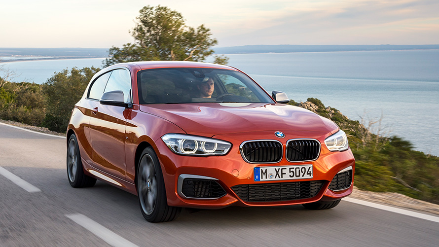

Mercedes GLE

| Diseño | Un paquete con muchas funciones. Los servicios mejorados de navegación y aparcamiento con información de tráfico en tiempo real facilitan los viajes. El sistema exclusivo de entretenimiento hace que el tiempo pase volando. Por supuesto, viene incluido el volumen de datos para todas las aplicaciones. Un abanico de opciones de personalización convierten a tu BMW en un vehículo que goza de una individualidad jamás vista. |
| Motor | 170 CV |
| Interior | El interior es minimalista y ordenado. En este sentido, la tecnología del puesto de conducción cobra protagonismo para que mantengas todo a la vista en todo momento. El grupo que conforman la gran pantalla curvada y la BMW Head-Up Display permite que los innovadores servicios digitales enriquezcan la experiencia al volante.El interior es minimalista y ordenado. En este sentido, la tecnología del puesto de conducción cobra protagonismo para que mantengas todo a la vista en todo momento. El grupo que conforman la gran pantalla curvada y la BMW Head-Up Display permite que los innovadores servicios digitales enriquezcan la experiencia al volante. |